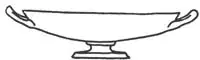
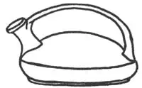
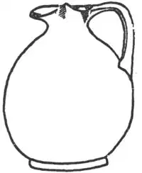
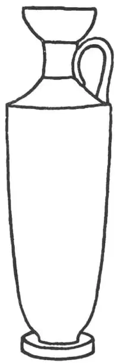
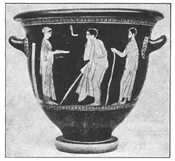

05
JARS AND JUGS
瓶罐上的画

BUT one kind of Greek painting has lasted, examples of which are in many museums. These are the paintings that were made on vases.
Our vases are made out of glass, china, or copper, and are usually for one purpose—to hold flowers. We don’t usually paint or even decorate the outside. But Greek vases were all made out of clay and they were not used for flowers at all. They were used to hold anything liquid—water, wine, oil, ointments, perfumes—as we would use jars and jugs, bottles and bowls, cups and kettles, pitchers or tin cans. They were made in many beautiful shapes. Some were tall and thin, some were short and fat. Some had one handle like a cup, some had two handles. Our pitchers and kettles and bowls to-day, whether they are made of glass or silver or china, are copies of many of the Greek vase forms. The Greeks had names for most of the shapes, and though the names are hard, you might like to learn some of them so that you may surprise your friends by calling the vases, bowls, pitchers, or dishes in your own house by their Greek names.
The kylix was a flat vase, shaped something like a fruit dish.
The askos was a low vase with a spout and a handle across the top. It was used for oil with which to fill lamps. It was, in other words, an oil can—only it was not made of tin.
The amphora was a rather fat vase with two handles on the hips.
The oinochoë was a pitcher-shaped vase.
The lekythos was a tall, thin, bottle-shaped vase with one handle.

NO.5-1 KYLIX（基里克斯陶杯）

NO.5-2 AMPHORA（阿科斯壶）

NO.5-4 ASKOS（酒坛）

NO.5-5 LEKYTHOS（莱基托斯陶瓶）
All the better vases were painted on the outside, with pictures. The pictures were not of kings and queens. In Egypt, the kings and queens would have been pictured. In Assyria, there would have been pictures of kings. But at that time the Greeks had no royalty, and no use for kings and queens. So they painted Greek gods and Greek heroes and scenes from their fairy-tales or mythology. Many of these pictures on the vases are like illustrations in a book and are very graceful and lovely, but they do not fool you and make you think them real. To fool you, a picture has to be the same size as the person or object.
The pictures were usually in two styles. In the first style, they were painted black or dark on a reddish flower-pot or clay-color background. In the second style, the background was black and the pictures were reddish or clay-color as if the whole vase had been painted black, then the picture scraped out so the clay-color was left to form the picture.

No.5-6 A GREEK VASE WITH REDDISH PICTURES
AND BLACK BACKGROUND（黑底红面的希腊花瓶）
Courtesy of the Metropolitan Museum of Art
【中文阅读】
但还是有一种希腊绘画保存了下来，在许多博物馆都能看到代表作品。这就是绘制在花瓶上的画。
我们的花瓶是由玻璃、陶瓷或者铜制成的，而且通常有一个用途——插花。我们一般不在花瓶的瓶身上绘画或装饰。但希腊的花瓶都是用黏土制作的，不是用来插花，而是用来装各种液体——水、酒、油、药膏、香水——就像我们今天所用的陶器瓦器、瓶瓶罐罐，茶杯水壶等容器。它们形式多样，美观大方。有些瘦高，有些矮胖。有的像独柄杯，有的有双柄。我们今天用的水罐茶壶和碗，无论是玻璃的、银制的或陶瓷的，都是仿造希腊花瓶的式样。希腊人给大部分形状不一的容器都起了名字。尽管这些名字很难读，但还是可以学的。当我们能用希腊语叫出家里的花瓶、碗、陶罐或盘子时，朋友们肯定会大吃一惊。
“基里克斯陶杯”是一种扁平花瓶，形状有点像水果盘。
“阿科斯壶”是一种带喷嘴的矮花瓶，顶上有只手柄。它是用来给油灯添油的。也就是说，它是一种油罐——只不过不是铝制品。
“双耳瓶”是一种瓶身肥大、瓶颈处有两个手柄的花瓶。
“酒坛”是一种水罐形花瓶。
“莱基托斯陶瓶”是一种瘦高的瓶状独柄花瓶。
所有上等花瓶的瓶身都绘上了画。画面上不是国王和王后。在埃及，画面上总会画国王和王后。在亚述，也肯定是画国王。但那时的希腊还没有王室，国王和王后也就没派上用场。所以他们就把希腊诸神和英雄以及有关他们的童话或神话场景画了上去。许多花瓶上的绘画就像书中的插图，十分雅致生动，但还不至于让你误以为真。要想让人误以为真，画中人物或物体必须跟真人真物一样大小才行。
这些画通常呈两种风格。第一种风格是在红色或陶土色背景下呈黑色或暗色画面。第二种风格是，在黑色背景上，画面呈红色或陶土色，就好像整个花瓶都画成了黑色，上面的图画是后来刮出的，露出了陶土色画面。